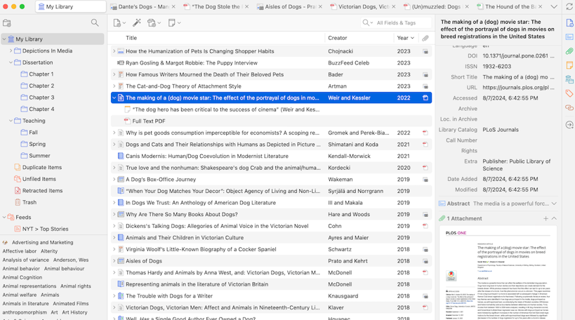

Writing Scientific Documents with AI
Reference Managers
Noé Sámano
Today
Three hours, four parts
Time Part What we do
7:10–7:50 3.1 Introduction Why we cite, Zotero installation, plugins 7:50–8:15 3.2 Capture Importing and editing references 8:15–8:25 Break Ten minutes 8:25–8:55 3.3 Writing Citations in Word, styles, organization 8:55–9:45 3.4 Verification Check and complete your references, cite in LaTeX 9:45–9:50 Wrap-up Responsible use, takeaways
Today's goal
By the end, you can…
Explain why reference management matters in academic work
Install Zotero and its browser and word processor plugins
Import, organize and tag your sources
Insert citations and change the citation style
Detect and fix errors in automatically generated references
Verify every source you cite
Warm-up · 5 min
How do we cite today?
Work in teams. Answer in writing:
What tool do you use to write your references?
When did a citation give you trouble?
Where do you get your references from?
Hora prevista: 7:12. Calentamiento de 5 min, termina 7:17.
Part 1 · Introduction
Parte 3.1. Hora prevista de inicio: 7:10. Termina 7:50.
Citations
A citation shows where an idea comes from
It gives credit to the author
It lets the reader find and check the source
It follows a style, such as APA or IEEE
Every idea that is not yours needs a citation.
Citation types
Where the citation goes
Type Form Example (APA 7)
Parenthetical Author and year in parentheses Multilayer networks learn representations of data (LeCun et al., 2015). Narrative Author in the sentence, year in parentheses LeCun et al. (2015) describe multilayer networks that learn representations.
Two authors: (LeCun & Bengio, 2015) in parentheses; "and" in narrative text
Three or more authors: first author plus et al.
Citation types
What you copy or rewrite
Type Form Example (APA 7)
Direct quote Exact words, quotation marks and page "[exact words from the source]" (LeCun et al., 2015, p. [page]). Paraphrase Your words, the same idea, still cited Models with several processing layers learn representations (LeCun et al., 2015). Summary Several ideas from a section, condensed The review presents multilayer models as learners of representations (LeCun et al., 2015).
Quotes need the page. Paraphrases and summaries need the citation too.
Academic integrity
Changing the words is not enough
Original
"Reference managers reduce the time spent on bibliographies."
Rewritten, with no citation
"Bibliography tools cut the time authors spend on reference lists."
Still plagiarism: the idea is not yours.
Checkpoint
Which sentence needs a citation?
I compare three reference managers in this report.
Water boils at 100 °C at sea level.
Handwritten notes help students remember more.
Correct: C. It reports a result that researchers measured, so it comes from a source.
A: It is your own work, so you do not cite it.
B: It is common knowledge that any reader already has.
Reference managers
A reference manager stores your sources
It keeps your references in one library
It inserts citations and creates the bibliography for you
Zotero is one free example
Context
What a reference manager does
Stores references, PDFs and research notes in one place
Inserts citations while you write
Generates the bibliography in the style you need
Keeps one library that works across your documents
Why it matters
A reference you do not check is a risk
Readers trust your sources; a wrong one damages your credibility
Reviewers and editors check references one by one
Manual lists break when you rewrite, reorder or change styles
A reference manager stores data. Checking that data is still your job.
Types
Common reference managers
Tool Type Good for
Zotero Free, open source Word, LibreOffice, Overleaf, browser capture Mendeley Free, with paid tiers PDF reading and annotation EndNote Commercial Institutions that already license it JabRef Free, open source BibTeX and LaTeX workflows
We use Zotero today. The ideas transfer to the others.
Zotero
Why we use Zotero
Free and open source
Stores references, PDFs and notes together
Works with browsers, word processors and Overleaf
Activity · 15 min
Install Zotero and its plugins
Create an account at zotero.org
Download and install the desktop application
Link your account: Edit → Settings → Sync
Install the browser connector and the Word or LibreOffice plugin
Done when: Zotero opens and shows "My Library".
Plugins: Zotero Connector · Word · LibreOffice · Overleaf (BibTeX export)
Mode: individual, with help from your mentor
Hora prevista: 7:34. Actividad de 15 min, termina 7:49.
Part 2 · Capturing
Parte 3.2. Hora prevista de inicio: 7:50. Termina 8:15.
DOI
A DOI is the paper's permanent ID
10.
1038
/
nature14539
10.
10. → fixed prefix for every DOI
1038
1038 → the publisher (Nature)
nature14539
nature14539 → this article's code, set by the publisher
doi.org/10.1038/nature14539 → the same paper
The link can change. The DOI still finds the same paper.
Capture
Save references from academic databases
Open a record in Google Scholar, Scopus or PubMed
Click the Zotero Connector icon in your browser
Check the item in your library before you use it
Manual import
Some fields fill in automatically; some you check
Field Usually automatic Check by hand
Title Yes Capitalization and typos Authors Yes Order and spelling Year Yes Print vs. online date DOI Often It must resolve to the same paper Journal Often Journal name and volume
Activity · 5 min
Which fields filled in by themselves?
Look at one item you captured or imported
Write down two fields that were filled in automatically
Write down one field you must check by hand
Hora prevista: 8:07. Actividad de 5 min, termina 8:12.
Checkpoint
A paper is available as an arXiv preprint and was later published at a conference. You read the conference version. What do you cite?
The arXiv preprint, because it is free and easy to find.
The conference version you read, with the conference name and pages.
Both, in the same entry.
Correct: B. Cite the version you actually read and that went through peer review.
A: Free access does not make the preprint the version to cite.
C: Two versions in one entry duplicate the same work.
Library
Collections, tags and notes

Live demo first. This capture is the backup if the connection fails.
Break
Pausa de 8:15 a 8:25. Regreso a las 8:25 con la parte 3.3.
Part 3 · Writing
Parte 3.3. Hora prevista de inicio: 8:25. Termina 8:55.
Word
Insert a citation from Zotero
Place the cursor where the citation goes
Click Add/Edit Citation in the Zotero tab
Search your library and select the item
Click Add/Edit Bibliography to generate the list
Citation styles
One reference, two styles
Style Reference
APA LeCun, Y., Bengio, Y., & Hinton, G. (2015). Deep learning. Nature, 521 (7553), 436–444. https://doi.org/10.1038/nature14539 IEEE Y. LeCun, Y. Bengio, and G. Hinton, "Deep learning," Nature , vol. 521, no. 7553, pp. 436–444, 2015.
Same data in the library. Only the format changes.
Citation styles
Change the style without rewriting
In the Zotero tab, click Document Preferences
Choose a new style, for example APA or IEEE
Click Refresh , or update the bibliography
Your text stays the same. Only the formatting changes.
Activity · 8 min
Cite and change the style
Open a Word document (or LibreOffice)
Insert two citations from your library
Generate the bibliography
Change the style to APA, then to IEEE
Hora prevista: 8:38. Actividad de 8 min, termina 8:46.
Organization
Tags mark what needs work
Collections group items by project or chapter
Tags describe status, such as pending verification
Notes keep your reasons for choosing a source
Sync keeps the library on all your devices
Part 4 · Verifying
Parte 3.4. Hora prevista de inicio: 8:55. Termina 9:45.
Audit
What to check in every entry
Field Question
DOI Does it lead to the same title and authors? Authors Are the names and order correct? Year Does it match the publication? Title Is it spelled and capitalized correctly? Duplicates Is the same paper listed twice under different keys? Existence Can you find the paper in a database?
Activity · 20 min
Check and complete every reference from AI
List every reference in your draft
Add each reference to your Zotero library, for example with its DOI
Check each one: does the DOI open the same paper? Are the authors, year and title correct?
Fill in the missing fields in Zotero
Tag each item verified or pending verification
Delete any reference you cannot find
Hora prevista: 8:59. Actividad de 20 min, termina 9:19.
Overleaf
How do you move your library into Overleaf?
In Zotero, select your collection and export it as a BibTeX file
Citation keys can change each time you export
We recommend installing Better BibTeX , which keeps the keys fixed
If a key changes, every \cite{} in your file breaks. The install steps are on the next slide.
Install · 5 min
Install the Better BibTeX plugin
Download the latest .xpi file from the Better BibTeX releases page
In Zotero, open Tools → Plugins
Click the gear icon, then Install Plugin From File
Select the .xpi file and click Install
Restart Zotero if the Better BibTeX option does not appear
On a Mac, the Tools menu is at the top of the screen, not inside the Zotero window.
Hora prevista: 9:22. Actividad de 5 min, termina 9:27.
Export
Export your library as references.bib
In Zotero, select the collection with your sources
Right-click, then choose Export Collection
Choose Better BibTeX and save the file as references.bib
In Overleaf, upload it to the same folder as your main .tex file
The name must match \addbibresource{references.bib}.
Activity · 10 min
Cite your verified sources in LaTeX
Replace each citation in your draft with \cite{key}
Export your collection as references.bib
Upload it to Overleaf and compile with Biber
Check that every citation appears in the bibliography
Hora prevista: 9:30. Actividad de 10 min, termina 9:40.
Validation · 4 min
Show your sources to your mentor
Show your Zotero library with the references you checked
Show your Overleaf draft, with the citations and bibliography compiled
The mentor checks one reference in both places